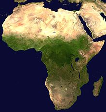
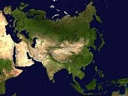
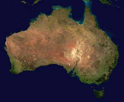
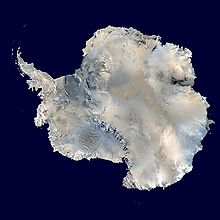

А́фрика — второй по площади материк после Евразии, омывается Средиземным морем с севера, Красным — с северо-востока, Атлантическим океаном с запада и Индийским океаном с востока и юга. Африкой называется также часть света, состоящая из материка Африка и прилегающих островов. Площадь Африки без островов составляет 29,2 млн км², с островами — около 30,3 млн км², покрывая, таким образом, 6% общей площади поверхности Земли и 20,4% поверхности суши. На территории Африки расположено 55 государств.
Се́верная Аме́рика (англ. North America, фр. Amérique du Nord, исп. América del Norte, Norteamérica, аст. Ixachitlān Mictlāmpa) — один из шести материков планеты Земля, расположенный на севере Западного полушария Земли. Площадь Северной Америки без островов — 20 360 000 км², с островами — 24 365 000 км². По этим показателям она сопоставима с Советским Союзом. К островам Северной Америки относятся Гренландия (2,175 600 км²), Канадский Арктический архипелаг, Вест-Индия, Алеутские острова и другие.

Ю́жная Аме́рика — один из шести материков планеты Земля, расположенный на юге Западного полушария. Омывается на западе Тихим океаном, на востоке — Атлантическим, на севере — Карибским морем, которое является естественным рубежом между двумя Америками. Панамский перешеек на северо-западе материка соединяет Южную Америку с Северной. В состав Южной Америки также входят различные острова, большинство из которых принадлежит странам континента. Острова в бассейне Карибского моря относятся к Северной Америке. Страны Южной Америки, которые граничат с Карибским морем — включая Колумбию, Венесуэлу, Гайану, Суринам, Французскую Гвиану и Панаму — известны как Карибская Южная Америка.

Евра́зия — крупнейший из шести материков на Земле. Площадь — 53,6 млн км², что составляет 36 % площади суши. Население — 5,349 млрд чел. (1 июл. 2019 г.), что составляет более 70 % населения планеты. Первоначально крупнейшему континенту мира давались различные названия. Александр Гумбольдт использовал название «Азия» для всей Евразии. Карл Густав Ройшле в 1858 году в книге «Handbuch der Geographie» использовал термин «Doppelerdtheil Asien-Europa». Термин «Евразия» впервые употребил геолог Эдуард Зюсс в 1880-х годах.
Австра́лия (от лат. australis — «южный») — континент, расположенный в Восточном и Южном полушариях Земли. Вся территория материка является основной частью государства Австралия. Материк входит в часть света Австралия и Океания. Самый маленький и сухой материк.
Антаркти́да — континент, расположенный на самом юге Земли, центр Антарктиды примерно совпадает с южным географическим полюсом. Антарктиду омывают воды Атлантического, Индийского и Тихого океанов. С 2000 года воды, омывающие Антарктиду к югу от 60° ю. ш., по решению Международной гидрографической организации предложено называть Южным океаном.
